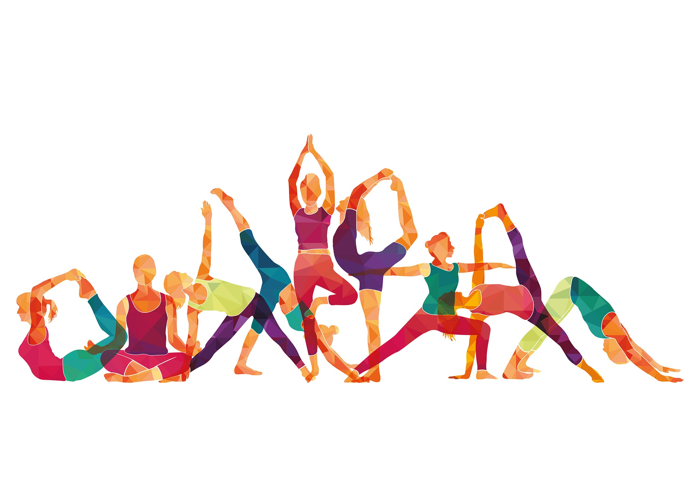

Human Pose Detection
This project estimates the yoga posture being performed by an individual.
Developers: CSE Group 5
Project Guide : Prof. Preetha Mathew and Asst. Prof Anitha Marry Chacko

Choose Pose
About us